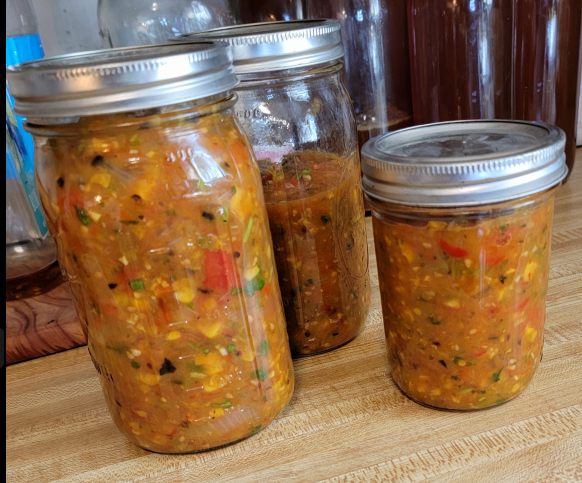

Mango Habanero Salsa

I'm still fiddling with the recipe. Feel free to play around with it. I've been testing different tomatoes!
Tools You Need.
- Oven
- Baking Sheet
- Food Processor (Blender will aslo work)
Ingredients
- 4 Tomatoes (vine on)
- 1 Red Pepper
- 3 Habanero Peppers
- 2 Jalapenos (bigger the bettter)
- 1 Onion
- 1 Can of Corn (frozen corn will also work)
- Cilantro (A handful)
- 1 Lime (juice)
- Salt (to taste)
Prep
- Set your oven to broil.
- Slice the tomatoes and onion in half and set them aside on a baking sheet.
- Destem the habanero peppers and jalapenos, slice the jalapenos in half long ways and place them on the baking sheet.
- Destem and deseed the red pepper, cut it long ways into forths and place the slices on the baking sheet.
- Cut the mango in half, removing the pit (throw the pit away). Place the mango on the baking sheet (skin facing down towards the baking sheet).
- Chop your cilantro and place it in the food processor. Cut your lime in half and sqeeze the juice in the processor too!
Broil
- Place the baking sheet in the oven for 15 minutes. (I like to use the shelf 2nd from the top for that crispy taste).
- Use the rest of the time to cook your corn in a saucepan, then add it to the food processor. (Use either butter or vegetable oil for a Vegan Option)
- After 15 minutes remove the habaneros from the oven and place them in the food processor. Put the pan back in the oven for 5 minutes.
Blend
- Take the pan out of the oven.
- Peel the skin off of the Mangos and tomatoes. CAREFUL VERY HOT!
- Add everything into the food processor (add salt to taste)
- Blend until you get a nice consistancy (I like to pulse for about 15 seconds).
Enjoy!
Grab some chips, Sit back, and Enjoy!